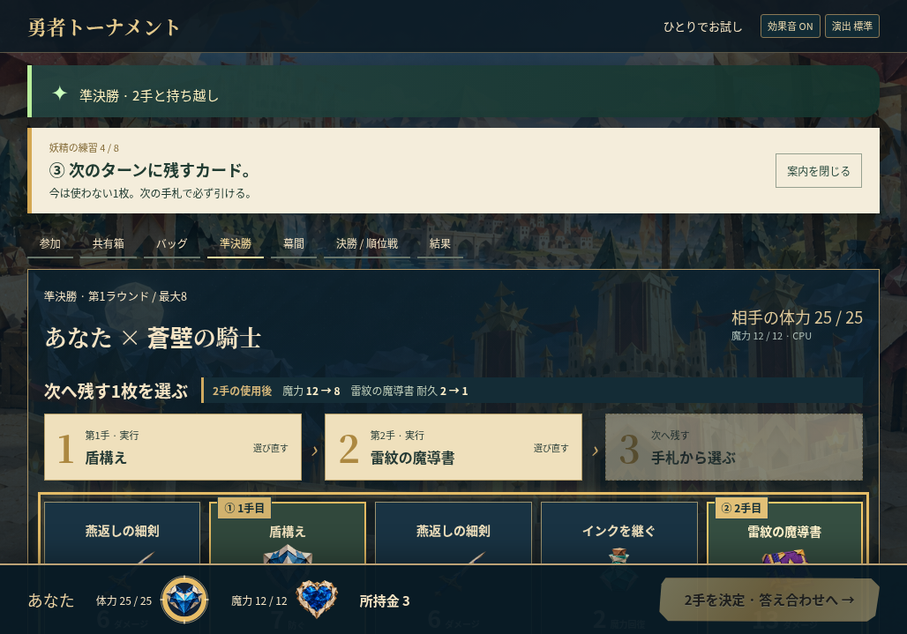
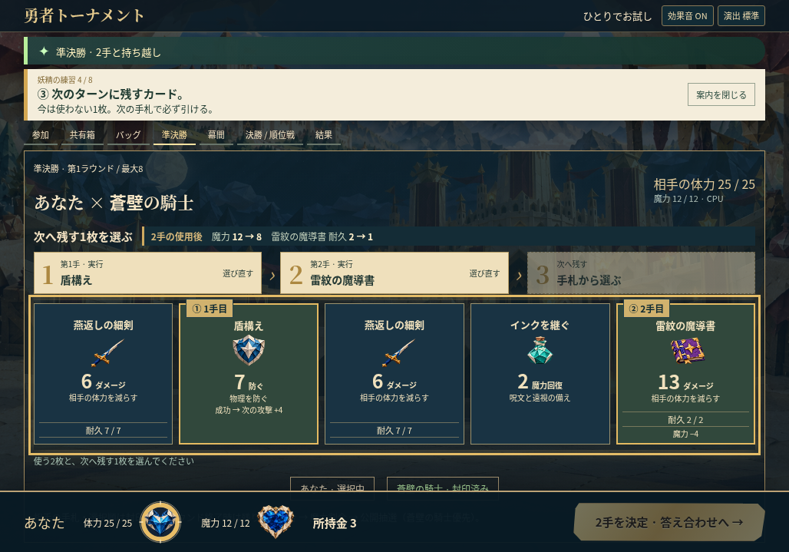
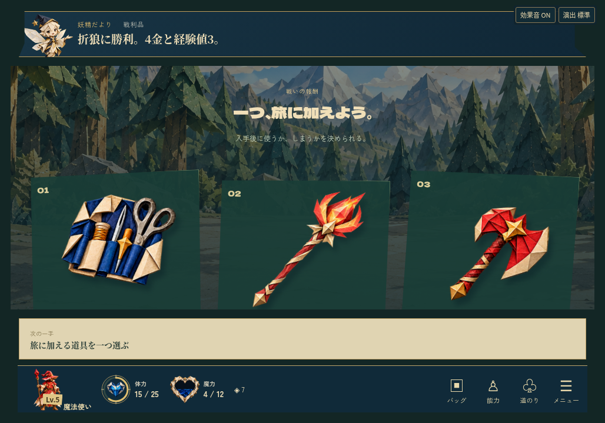
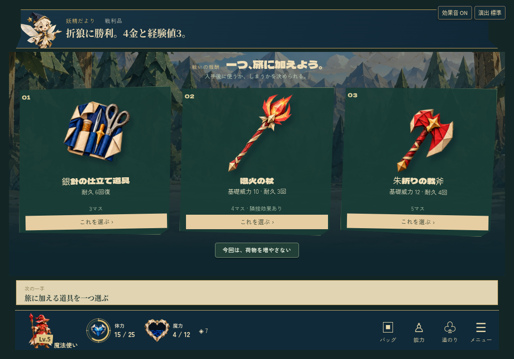
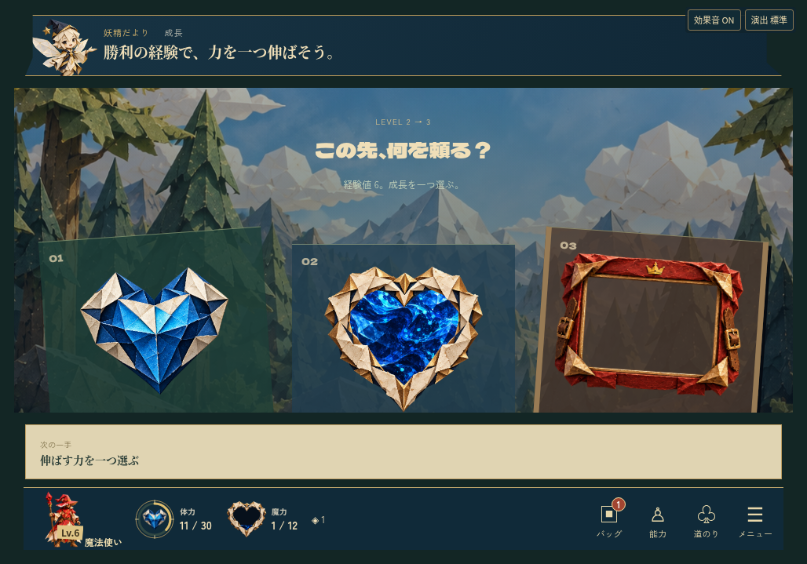
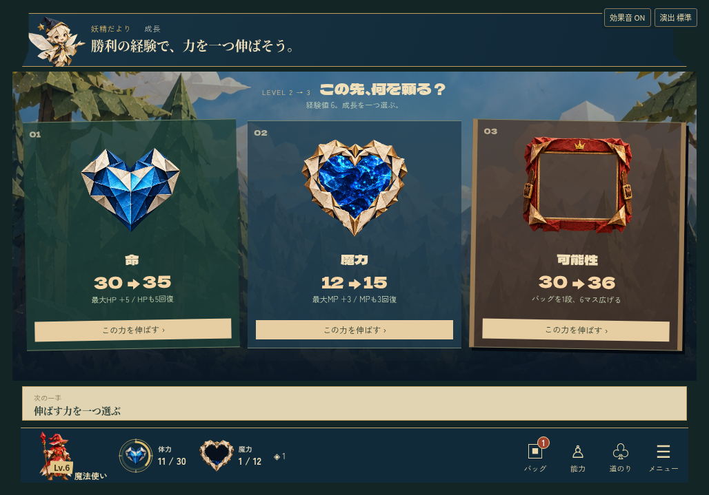

← 勇者トーナメントの案内2026年11月4日
r14へ採用 · Windows版で確認済みレビュー待ちに進めた、表示の前後比較。
手札の見切れと、報酬・成長の比較しづらさを先に修正した候補。「修正前 r13」と「修正候補」を切り替えて確認できます。
独立レビューの優先課題と照合し、この表示をr14へ採用しました。以下の前後画像は、同じ状態・同じ1028×719pxのLinux Chromium比較のまま保持しています。別途、r14の実Windowsで通し試遊と表示検査を完了しました。r13の配布物・レビュー基準画像も保持しています。
手札を、下まで読めるように
案内文と①②③は残し、上部と枠間の余白を調整。5枚の名前・絵・威力・魔力・耐久を、固定フッターより上へ収める。


報酬を、絵と効果で選ぶ
3品のアートを残しながら、名称・効果・使うマス数・選択ボタンを同じ画面に表示する。


成長の違いを、同時に比べる
命・魔力・バッグの絵と、増加する数値・具体的な効果を3候補とも表示する。

